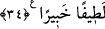

müstağrak bir halde sağından âhirete ve orada bulunanlara, solundan dünyâya ve orada
bulunanlara selâm verir. “Zekâtı verin.” Zekât, hakîkî varlık üzerine ziyâde olan
mecâzî varlıktır. Onu vermek hakiki varlık uğrunda sarf ve ifnâ etmektir. Bu da “Allâh’a
ve Rasûlü’ne itâat edin” hükmünü yerine getirmek yoluyla olur. “Ey Ehl-i Beyt!” Ey
vuslat evinin ve vahdet meclisinin ehli! “Allah sizden, sadece günahı” hudûs/sonradan
olma kirini “gidermek ve sizi” hudûs kirinden cemal ve celal sıfatlarının tecellisi olan
temiz bir içecek ile kendisinden sonra artık kirlenme olmayacak şekilde “tertemiz
yapmak istiyor.”
Nitekim “Fânî olan bir daha önceki vasıflarına geri çevrilmez.’ demişlerdir. Bu
sebeple kâmil velîler için tabîatın (hased, cimrilik gibi beşerî sıfatların) tekrar ortaya
çıkma korkusu yoktur.
Kul, mutlak olarak kendinden fânî olmadıkça,
Onun nazarında tevhîd gerçekleşmez (tevhîdin hakîkatına ulaşamaz),
Tevhîd, hulûl değildir, senin yok olmandır,
Yoksa lafla insan Hak olmaz.
Allah Teâlâ bizi ve sizi tevhîdin hakîkatlarına erdirsin. Bizi kendi nezdinden en
kuvvetli bir şekilde te’yid eylesin. Varlıklarımızın nakışlarını silsin. Bizi
enâniyetlerimizin kirlerinden temizlesin. O çok kerim, cömert ve kullarından herbirine
son derece şefkat ve merhametlidir.
34. Evlerinizde okunan Allâh’ın âyetlerini ve hikmeti hatırlayın. Şüphesiz Allah,
çok lütufkârdır ve her şeyden haberi olandır.
Ey peygamber hanımları! “Evlerinizde okunan Allâh’ın âyetlerini ve hikmeti” yâni
mu‘ciz olan nazmı ile peygamberliğin doğruluğuna delâlet eden Allâh’ın apaçık âyetleri
olma özelliği ile türlü ilimleri ve şer‘î hükümleri ihtivâ eden bir hikmet olma özelliğini
kendisinde toplayan Kitâb’ı/Kur’ân’ı “hatırlayın” hıfz edin, insanlara öğüt ve nasihat
yoluyla zikredin.
Hikmetin mânâsı Lokman sûresinde (31/12) geçmişti. Katâde buradaki “âyetler”i
Kur’an âyetleri, “hikmet”i de sırf hikmet olan hadîs olarak tefsîr etmiştir.
Bu âyet, Hz. Peygamber (s.a.)’in hanımlarını (dünyâ ve ziyneti taleplerine) son
vermeye ve mükellef tutuldukları konularda sorumluluklarını yerine getirmeye teşvik
etmek üzere nübüvvet hânesinden ve vahyin indiği ocaktan olmakla kendilerine ikram